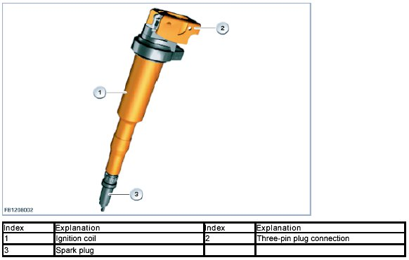
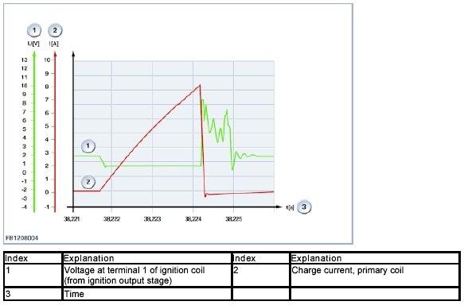
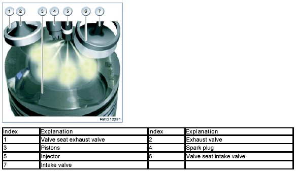
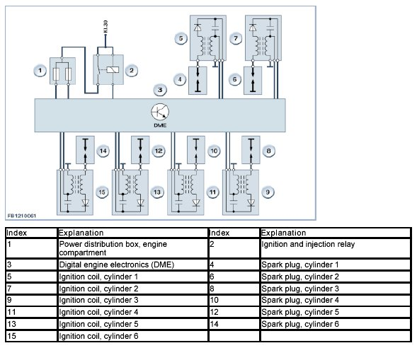

Ignition System: Description and Operation
Ignition
Ignition
The engine features an inductive ignition system with static ignition distribution.
The ignition circuit consists of the following components:
- Ignition coil with primary and secondary coil
- Ignition output stage in the Digital Motor Electronics (DME) for controlling the current via the primary coil
- Spark plug which is connected to the secondary coil.
Each spark plug is activated by a high voltage from a separate ignition coil (pencil ignition coil) that is inserted directly into the cylinder head cover and activates a separate ignition output stage in the Digital Motor Electronics (DME).
The ignition coils use the vehicle voltage to generate this high voltage that ignites the fuel-air mixture in the combustion chambers.
The point at which the ignition spark ignites the fuel-air mixture must be set so as to ensure optimum torque, low fuel consumption and minimum pollutant emissions. The essential variables are:
- Engine speed
- Engine torque
- Air ratio value
- Coolant temperature
- Intake air temperature.
These values are recorded by sensors, processed by the Digital Engine Electronics (DME), digitalized and output as a signal for the ignition output stages.
Brief component description
Descriptions of the following ignition components are provided:
- Ignition coils
- Ignition output stage
- Spark plugs.
Ignition coils
Each spark plug is activated by high voltage from a separate ignition coil (pencil ignition coil) and also a separate ignition output stage in the Digital Motor Electronics (DME).
The ignition output stage switches on a current from the on-board electrical system through the primary coil before the required ignition time. While the primary circuit is closed (closing time), a magnetic field is built up in the primary coil. When the ignition time is reached, the current is interrupted again by the primary coil. The energy of the magnetic field discharges via the magnetically coupled secondary coil (induction). This creates a high voltage in the secondary coil, which generates the ignition spark at the spark plug.
The ignition voltage that is needed at the spark plug (required ignition voltage) must always be greater than the maximum possible ignition voltage of the ignition system (available ignition voltage). Once the ignition spark has broken through, the remaining energy is converted at the spark plug during the spark duration.

The ignition time when the ignition spark ignites the fuel-air mixture in the combustion chamber must be set with extreme accuracy. This provides an optimum torque and low consumption, together with minimal emissions.
The essential variables are:
- Engine speed
- Engine torque
- Charging pressure
- Current lambda value
- Coolant temperature and intake air temperature
- Fuel grade (octane number)
- Engine operation (engine start, idle, partial load, full load).
The ignition coil operates according to the principle of a transformer. 2 coils are placed onto a shared ferric core. The primary coil consists of a thick wire with just a few windings. One end of the coil is attached to the positive terminal (terminal 15) of the vehicle voltage via the load-shedding relay terminal 15. The other end (terminal 1) is connected to the ignition output stage, which can use it to switch the primary circuit. The secondary coil consists of thin wire with many windings.
The ignition signal calculation ensures that the ignition spark is produced in the correct cylinder, with optimum ignition timing and with the necessary energy. To do this, the speed signal from the crankshaft is recorded. used by the Digital Motor Electronics (DME) to calculate the crank angle and the engine speed.
The ignition output stages are switched on and off for any required crank angle (petrol engine: -70 crankshaft degrees before top dead centre up to +30 crankshaft degrees after top dead centre). In a 4-stroke engine, ignition is only required after every second revolution which means the camshaft sensor is necessary in order to clearly allocate a cylinder.

Ignition output stage
The task of the ignition output stage is to connect the primary circuit for the ignition coil to the ground. The ignition output stages are integrated in the Digital Motor Electronics (DME).
Spark plugs
The engine features a Bosch spark plug. The spark plug performs the task of introducing the ignition energy into the combustion chamber. Electrical sparking between the electrodes initiates combustion of the fuel-air mixture. Spark plugs in jet-guided direct injection diesel engines are subject to specific requirements. A distinctive charge movement occurs in jet-guided direct injection diesel engines when compared to engines with intake pipe fuel injection. Geometrically, the spark plug must lie directly in the fuel injection trajectory. To do this, a precise torque of 23 Nm (± 3 Nm) must be observed during installation.
As the spark plug electrode is positioned particularly deep inside the combustion chamber,. lean fuel-air mixture can also be ignited. This is important in the cold-start phase and in the so-called catalytic converter warm up phase. Multiple sparks are also discharged during this phase when, in contrast to previous Digital Motor Electronics (DME), all ignition-related diagnosis processes remain active.

System overview
The following graphic shows a system overview of the ignition in engine N55:

System functions
The following system functions are described:
- Multiple spark ignition
- Ignition circuit monitoring.
Multiple spark ignition
The basis for multiple spark ignition is repeated switching on and off of the ignition coil. As a result, the actual ignition spark is extended to produce a band of sparks. The individual sparks can be cancelled by recharging early with the result that no further energy at the spark plug is transmitted to the fuel-air mixture. Residual energy is left In the ignition coil which minimizes the recharging time.
Multiple spark ignition is only intended to be used in the low engine speed range and also during the warm-up phase (spark plug cleaning).
The point at which the spark combustion period of 0.5 milliseconds occurs is determined so that the subsequent sparks can still be discharged before top dead centre. This provides a further option for ignition of the fuel-air mixture if combustion is delayed due to unfavorable preconditions.
Follow-up sparking also performs another important function by cleaning the spark plug as it is preconditioned more effectively for the next combustion cycle when several sparks are discharged.
Ignition circuit monitoring
The ignition circuit is monitored on the basis of the current in the primary coil of the ignition coil. When the engine is switched on, the current must stay within specific values during certain time thresholds. The ignition diagnosis monitors the:
- Primary circuit of the ignition coil
- Wiring harness for the ignition
- Secondary circuit of the ignition coil with spark plug
- Spark duration.
The following faults can be detected by the ignition circuit monitoring:
- Short circuit at the primary side of the ignition coil
- Short circuit on the secondary side of the ignition coil
- Spark plug
- Line disconnection of the activation
- Faulty ignition output stages.
The following cannot be detected:
- Sporadic faults such as loose contacts in the actuating wire
- Flashovers in the high voltage circuit parallel to the spark gap without the formation of an interturn fault.
We can assume no liability for printing errors or inaccuracies in this document and reserve the right to introduce technical modifications at any time.